(Terence teaches in University of San Francisco's MS in Data Science program. You might know Terence as the creator of the ANTLR parser generator.)
in progress
ADD LINKS TO IMAGES
Linear and logistic regression models are important because they are interpretable, fast, and form the basis of deep learning neural networks. They are also extremely simple; we're just fitting lines (or hyperplanes) through training data. Unfortunately, linear models have a tendency to chase outliers in the training data, which often leads to models that don't generalize well to new data. To produce models that generalize better, we all know to regularize our models. There are many forms of regularization, such as early stopping and drop out for deep learning, but for isolated linear models, Lasso and Ridge regularization are most common. (We'll call Lasso L1 and Ridge L2 for reasons that will become clear later.)
My goal in this article is to provide a visual explanation for regularization of linear models and to identify the critical stumbling block that makes it hard to understand how regularization works. Here it is upfront: the math used to implement regularization does not correspond to the pictures everyone uses to explain regularization. Take a look at the oft-copied picture on page 71 “Shrinkage Methods” from the excellent book The Elements of Statistical Learning (Hastie, Tibshirani, Friedman):
Students see this multiple times in their careers but have trouble mapping that to the relatively straightforward mathematics used to regularize linear model training. The simple reason is that those graphs show how we regularize models conceptually, with hard constraints, not how we actually implement regularization, with soft constraints! We'll go into that in detail shortly. This single disconnect has no doubt caused untold amounts of consternation for those trying to deeply understand regularization. Read on to learn the real story.
I also want to answer key questions regarding L1 Lasso regularization:
These are not easy questions to answer in detail, even for mathematicians. Try explaining simply, without handwaving, to an inquisitive and persistent student; you'll find that you're not exactly sure. ;)
Regularization for linear and logistic regression is done through the same penalty term in the loss function and so I will focus on just linear regression in this article.
I'm assuming that readers more or less understand the mathematics of linear models and how we find optimal model coefficients to fit lines, but let's take a minute to review the important equations so we're all on the same page. (My plan is to keep mathematics notation to a minimum in this article though.)

A single-variable linear regression model is familiar to us from high school algebra: 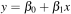, where (coefficient) 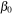 is the y-intercept and  is the slope of the line. For example, let's say we have the following 10 training records and want to draw the best fit line through the points, as shown in Figure 1.1.
is the slope of the line. For example, let's say we have the following 10 training records and want to draw the best fit line through the points, as shown in Figure 1.1.
The best fit line is 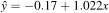, where we use  to indicate it is an approximation of the true underlying relationship between x and y. Using Python and sklearn, it's trivial to fit a linear model to this data:
to indicate it is an approximation of the true underlying relationship between x and y. Using Python and sklearn, it's trivial to fit a linear model to this data:
and get those optimal coefficients:
optimal_beta0 = -0.170, optimal_beta1 = 1.022 y_pred [-0.17 0.97 2.1 3.24 4.37 5.51 6.64 7.78 8.91 10.05]
The notion of best fit means choosing and to minimize the average error, the average difference between the known true 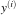 values and the model predictions, 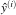. To make things nice mathematically, and to avoid needing an absolute value operator, linear regression optimizes the average (mean) squared error. That's where the term Ordinary Least Squares (OLS) comes from. The MSE function is a quadratic that always gives us a bowl shaped loss function, for 2 coefficients anyway, as shown in Figure 1.2. For all n training records 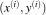, we find to minimize:
(If you're a numpy junkie, that is just np.mean(y - m.predict(x)) for vectors y and x.) Plugging the model, our line equation, into that MSE we get:

The loss function goes up as and move away from the bottom of the bowl. The big black dot represents the minimum loss location, 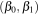 = (-0.17, 1.022). (See code/loss3d.py for the code.) Three-dimensional plots are sometimes hard to interpret on a two-dimensional screen, so you will often see the loss function projected down onto the , plane, as shown in Figure 1.3 (code/loss2d.py).
It's important to see the relationship between Figure 1.1 and Figure 1.2. So, just to be clear, shifting and in Figure 1.2 causes the orange line in Figure 1.1 to tilt or move up and down, away from the best fit.
So far so good. Given some data, we can fit a best fit line through the data where “best fit” means the line that minimizes the average squared between true y values and those predicted by the model. Now, let's tweak the last y value to be about 10 times as big:
optimal_beta0 = -13.150, optimal_beta1 = 5.402 y_pred [-13.15 -7.15 -1.14 4.86 10.86 16.86 22.87 28.87 34.87 40.87]

Look what happens to the best (orange) fit line, as shown in Figure 1.4! It has tilted substantially upwards towards the outlier. Because the loss function squares the error, an outlier can seriously distort the shape of the “bowl” and, hence, the minimum location of the optimal and coefficients. Instead of 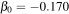 and 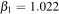, the coefficients are 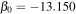 and 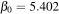. All real data is noisy and sometimes outliers are common, which provides us with the motivation to regularize our linear models.
Let's try Ridge regularization. Using sklearn again, we can fit a new line through the data using Ridge regression:
optimal_beta0 = 7.015, optimal_beta1 = 1.369 y_pred [ 7.02 8.54 10.06 11.58 13.1 14.62 16.14 17.67 19.19 20.71]

The alpha=300 hyper parameter controls how much regularization we need, in this case a lot. (For those using TensorFlow's keras interface, you might use something like activity_regularizer=regularizers.l2(300) in one of your layers.) While sklearn uses alpha, we will use  as the regularization hyper parameter as we get into the regularization penalty term of the loss function. Notice that the regularized slope, 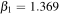, is very close to the unregularized without the outlier. With regularization, the orange fitted line is held back to an appropriate angle, as shown in Figure 1.5. Using Lasso regularization, Lasso(alpha=45).fit(x, y), we'd get similar results.
as the regularization hyper parameter as we get into the regularization penalty term of the loss function. Notice that the regularized slope, 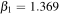, is very close to the unregularized without the outlier. With regularization, the orange fitted line is held back to an appropriate angle, as shown in Figure 1.5. Using Lasso regularization, Lasso(alpha=45).fit(x, y), we'd get similar results.
The price we pay for keeping the angle sane, is a less accurate (biased) overall result than we saw for the unregularized model for non-outlier data. The regularized y-intercept is larger, 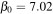, compared to unregularized 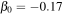 for the data without the outlier. You can see that the orange line rests above the majority of the data points instead of going through them. The outlier is still pulling the best fit line upward a little bit.
We've motivated the need for regularization by showing how even a single outlier can seriously skew our model, but we still have no idea how regularization works. Let's look at a real but small data set called Ames housing price data (ames.csv) because it will point is in the direction of the solution. Figure 1.6 shows a bar chart with one bar per coefficient using unregularized linear regression (with normalized explanatory variables and dummy-encoded categorical variables). Wow. Those are some big coefficients and, in fact, I had to clip them to slope magnitudes less than 1e8! Contrast that with the Ridge-regularized coefficients in Figure 1.7, which are in a much more reasonable range. The accuracy of the unregularized model is ridiculously bad, with an error of 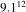 dollars on a 20% validation set. Using Ridge regression, however, the error is only about $18k per house. With an average house price of about $180k, that's only 10% error on the same validation set. (If you're an R^2 fan, the regularized validation R^2 is 0.84.)
That gives us the clue we need to arrive at the premise of regularization: extreme coefficients are unlikely to yield models that generalize well. The solution, therefore, is simply to constrain the magnitude of linear model coefficients so they don't get too big. Constraining the coefficients means not allowing them to reach their optimal position, at the minimum loss location. That means we pay a price for improved generality in the form of decreased accuracy (increase in bias). Recall what we observed in Figure 1.5 where the orange line sat a bit above the majority of the data. This is a worthwhile trade because, as we can see from this example, unregulated models on real data sets don't generalize well (they have terrible accuracy on validation sets).